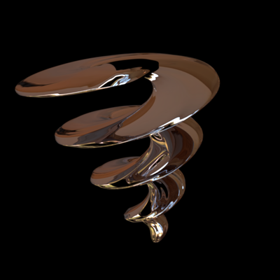

Corkscrew¶
{kind=link}
Code for producing the model:
% The profile and the midline (spine) of the object vary as a
% function of the y-coordinate:
y = linspace(0,1,256);
% The x- and z-coordinates of the midline (spine) of the object.
% This produces a spiral narrowing towards the end
x = 2*sin(8*pi*y).*y;
z = 2*cos(8*pi*y).*y;
% The object type will be a surface of revolution. This is the
% profile to produce that surface (ie this curve is revolved around
% the y-axis):
profile = y.^.5;
% Call the noise function to add slight corrugation to the surface:
objMakeNoise('revolution', % base shape
[8 1 0 30 .03], % noise parameters
'rcurve',profile, % curve to produce the surface of revolution
'spinex',x,'spinez',z, % midline/spine coordinates of the object
'caps',true, % add caps to the ends
'corkscrew.obj'); % save the model in this file
XML for rendering with Mitsuba. This example uses an environment light map by Bernhard Vogl (downloaded from http://dativ.at/lightprobes/). If you don’t have that map, you will have to use another light source.
<scene version="0.5.0">
<integrator type="path">
<boolean name="hideEmitters" value="true"/>
</integrator>
<sensor type="perspective">
<transform name="toWorld">
<lookAt origin="0, 6, 12" target="0, 0.5, 0" up="0, 1, 0"/>
</transform>
<float name="farClip" value="30"/>
<sampler type="ldsampler">
<integer name="sampleCount" value="32"/>
</sampler>
<film type="hdrfilm">
<integer name="width" value="512"/>
<integer name="height" value="512"/>
<rfilter type="gaussian"/>
</film>
</sensor>
<shape type="obj">
<string name="filename" value="corkscrew.obj"/>
<bsdf type="conductor">
<string name="material" value="Cr"/>
</bsdf>
<transform name="toWorld">
<rotate z="1" angle="10" />
<rotate x="1" angle="0" />
</transform>
</shape>
<emitter type="envmap">
<string name="filename" value="20060807_wells6_hd.hdr"/>
<float name="scale" value="1"/>
<transform name="toWorld">
<rotate y="1" angle="90" />
</transform>
</emitter>
</scene>
Please note that this is just an example. There’s no guarantee these are in any way reasonable, or sensible, modeling or rendering parameters for a particular application.